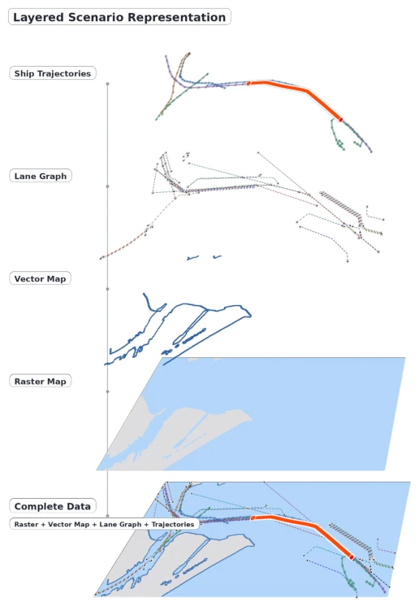
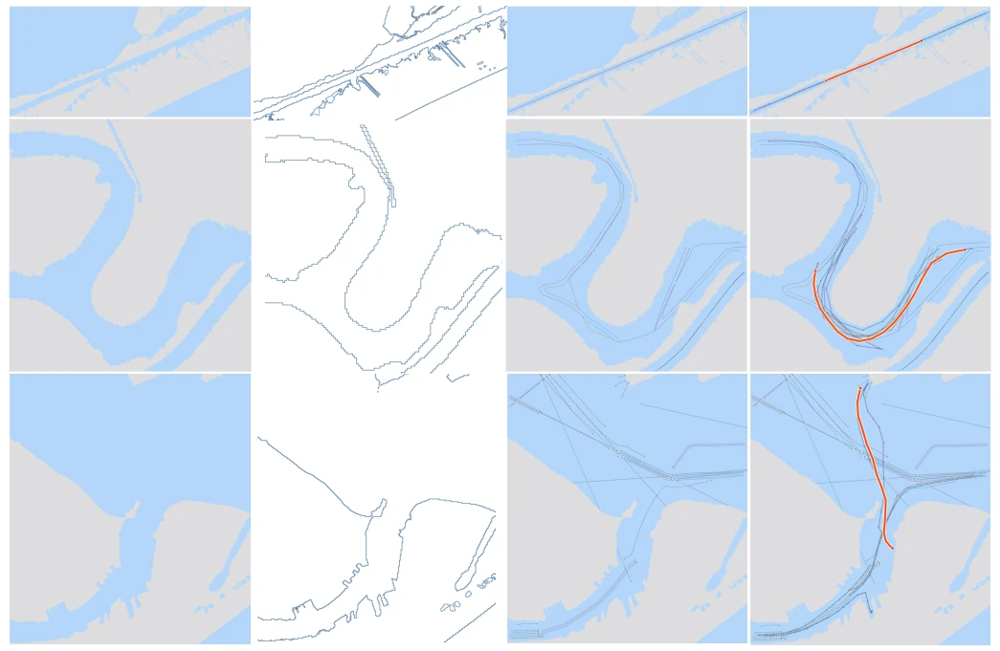
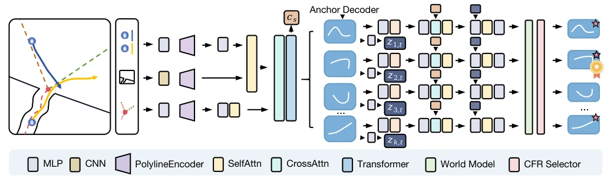

NaviAIS essentially fills a gap for the maritime AI community, as previous AIS data was either too messy or lacked maps, making predictions rely entirely on guessing. NaviLane's combination of macro-actions + residuals + world models, although sounding like a patchwork of land-based autonomous driving, indeed performs significantly better than LSTM and Transformer in long-horizon prediction. However, training with a 128 macro-action codebook is estimated to be quite GPU-intensive, and given that the maritime environment is much more complex than land-based, whether relying solely on CFR to evaluate collision risk is sufficient in open seas remains questionable. Overall, the dataset is a solid contribution and the model is icing on the cake, but do not expect it to directly replace traditional chart navigation.
Existing AIS trajectory prediction faces three major pain points. First, poor data quality; existing datasets such as OMTAD [4] or North Sea [5] are mostly raw message streams, with inconsistent sampling rates and high noise, lacking a unified scene construction protocol [11]. Second, lack of environmental representation; most public resources lack structured channels, water geometry, and navigable area constraints, making it difficult for models to integrate environmental perception [16]. Finally, limitations in prediction methods; existing history-sequence-based methods lack trajectory-map joint representation, making it difficult to handle complex interactions in narrow channels or port areas [12]-[13]. Additionally, candidate trajectory evaluation mostly relies on likelihood, lacking explicit evaluation of interaction consequences and environmental feasibility [6], [7]. Therefore, constructing a standardized scene-level dataset and introducing a consequence-aware evaluation framework is crucial.

Fig. 1. This figure illustrates the multi-layer structure of a single navigation scenario in the proposed dataset, including vessel trajectories, lane graphs, vector maps, raster maps, and the complete scene representation obtained by integrating multi-source information. By jointly representing AIS trajectories, lane vectors, water–land raster maps, and map boundaries in a unified format, the dataset captures vessel motion patterns, navigational constraints, and complex maritime geographic environments, thereby providing richer scene context for map-aware vessel trajectory prediction.

Fig. 4. Visualization of dataset scenarios. First show raster maps, vector maps, navigable-channel vectors, and AIS vessel trajectories for narrow inland waterways, respectively. Second show the corresponding results for curved inland waterways. Third show the corresponding results for port areas.
NaviLane adopts a hierarchical macro-action prediction framework. The pipeline is divided into four steps: encoding, generation, optimization, and evaluation. First, a unified scene representation is obtained by fusing historical trajectories with vector channels and raster maps via Transformer. Second, coarse-grained candidate trajectories are generated using a discrete macro-action codebook, covering different navigation intents. Next, a residual correction module is introduced, combining kinematic features (speed, acceleration) and scene context to correct local geometry and dynamic errors. Finally, a consequence-based evaluator (CFR) based on a world model is constructed to predict future states of surrounding ships, calculate Closest Point of Approach (CPA) and collision risk, and reorder the candidate set combining an energy function (smoothness, map constraints). This "coarse-fine" generation plus "consequence" filtering mechanism aims to balance diversity and physical rationality.

Fig. 2. Framework overview: The proposed NaviLane first encodes historical vessel trajectories, vectorized lane polylines, and rasterized map priors, and fuses them with a scene interaction Transformer. Based on the fused scene context, a world model predicts surrounding-agent futures, while a macro-action anchor decoder generates multi-modal trajectory candidates in a coarse-to-refined manner. Finally, safety-aware energy, map constraints, and selector/reranker modules are jointly used to score and rank all candidates, producing the final top-Kout trajectories and the best top-1 prediction.
Tested based on the NaviAIS dataset, containing training/validation/test sets (4000/1000/1000 scenes). Comparison baselines include LSTM, Transformer, Tptrans [7], DI-MTP [6], PECNet, etc. Metrics cover ADE, FDE, minADE@K, RMSE, etc. NaviLane outperforms baselines in both unimodal and multimodal settings, especially in long-horizon (10 steps) prediction where ADE@10 drops to 3.57. Ablation studies show that removing the residual correction module leads to a sharp increase in long-horizon errors, and removing the world model evaluator also significantly reduces performance, proving that local correction and consequence evaluation are indispensable. Visualization results (Fig 6, 7) indicate that trajectories generated by NaviLane fit channel geometry better, and multimodal coverage is more reasonable, avoiding DI-MTP's over-dispersion or PECNet's mode collapse.